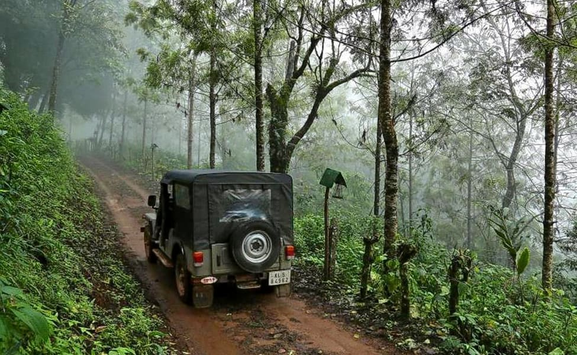
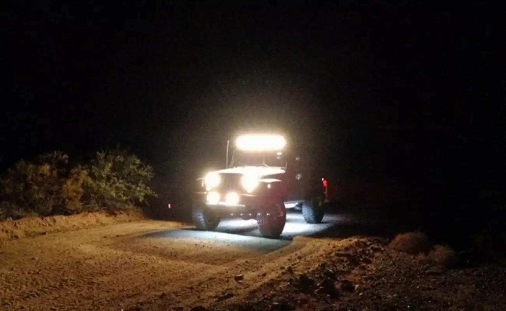
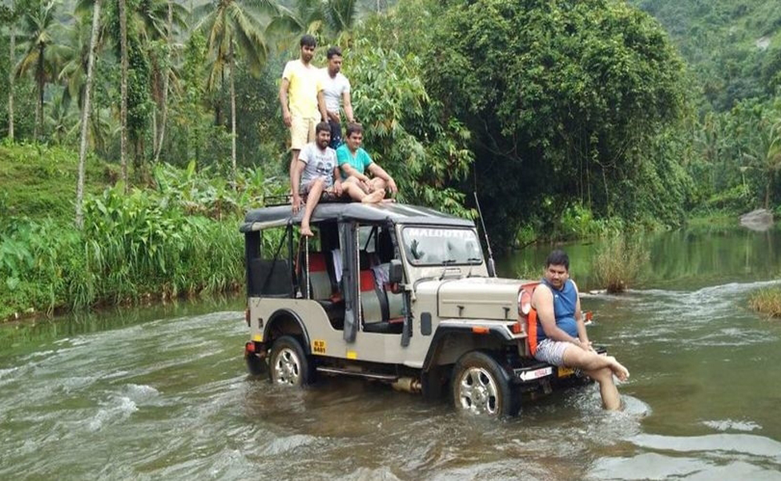

Munnar
Jeep safari
Jeep safari
We offer a thrilling and adventurous way to explore the picturesque landscapes and natural beauty of this popular hill station in Kerala, India. Known for its lush tea plantations, rolling hills, and abundant wildlife, Munnar provides an ideal setting for a memorable jeep safari experience.

Off-Road safari
Package starts at 4000 INR
Experience Munnar's untamed beauty on an off-road safari. Ride in a sturdy 4x4 jeep, explore rugged terrains, and discover hidden corners. Encounter stunning landscapes, tea plantations, and misty valleys. Spot wildlife like elephants and birds. With knowledgeable guides, it's an exciting adventure in Munnar's wilderness. Go off the beaten path and embrace the wild side of Munnar.

Night safari
Package starts at 4000 INR
Embark on a captivating night safari in Munnar to observe wildlife in their natural habitat. With expert guides and specialized vehicles, explore the wilderness under the starlit sky. Encounter elusive nocturnal creatures and gain insight into their behavior and conservation. Immerse yourself in the magical world of nighttime wildlife on this unforgettable adventure.

Aanakulam Jeep Safari
Package starts at 4000 INR
Embark on the exciting Anakulam Jeep Safari in Munnar. Witness majestic elephants, conquer off-road river crossings, and gain insights from expert guides. Experience the perfect blend of wildlife exploration and thrilling adventure in Munnar's wilderness.